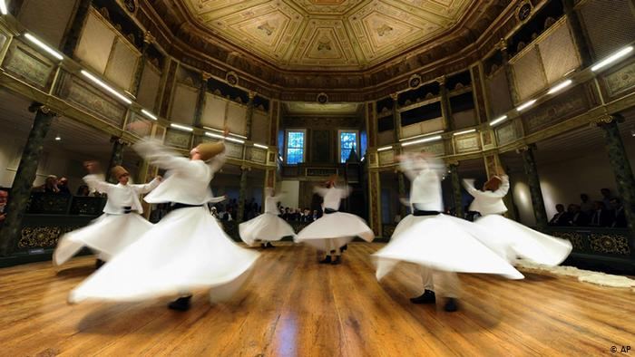

Sufism is a mystical and ascetic Islam practiced by tens of millions of Muslims. Known as "Tasawwuf" in the Muslim world, in the West it is often erroneously thought of as a separate sect.
Sufism is more prominent among Sunnis, but there are also Shiite Sufi orders, or "tariqa."
Followers of Sufism believe they can become closer to Allah through inner purification and introspection. They do this by meditating and receiving guidance from their spiritual leaders, or ( "murshid" ).
Adherents of Sufism follow the five pillars of Islam just as other practicing Muslims. They declare faith in one God Allah and Mohammed as his messenger, pray five times a day, give to charity, fast and perform the Hajj pilgrimage to Mecca.
Timothy Winter, an Islamic scholar at the University of Cambridge, describes Sufism as "a broad devotional tendency."
"There are no practices or beliefs characteristic of all Sufis. It is too diverse for that," he told DW.
The most well-known "tariqa" in the Western world is the Mevlevi Order, founded by the followers of the 13th Century Persian poet and mystic Rumi his death in the Turkish city of Konya.
The Mevlevi Order performs the Sufi practice of "dhikr" in a musical ceremony and dance, giving them the moniker "dhikr"

Sufism originated after the death of Mohammed in 632, but it did not develop into orders until the 12th Century. The orders were formed around spiritual founders, who gained saint status and shrines built in their names. There are dozens of Sufi orders and offshoots. Sufism spread throughout the Muslim world, becoming a central component of many peoples' religious practice from Indonesia and South Asia to Africa and the Balkans. Sufi orders were sometimes close to the ruling powers such as the Ottoman Empire, helping their spread and influence. As it spread, it often adapted to and incorporated local beliefs and customs that made it popular, but would later become to be viewed by Islamic extremist groups as heretical.
The 18th Century saw the emergence of a new puritanical Islamic ideology and movement on the Arab peninsula that would later give birth to violent extremist groups such as al-Qaeda and IS. Wahhabism to purge Sunni Islam of accretions and innovations such as the widespread Sufi practice of venerating saints and visiting tombs and shrines. The goal was to create a "pure" The Wahhabi movement allied with the House of Saud, which eventually established the Kingdom of Saudi Arabia in 1932. From the 1960s , Saudi and Arab Gulf oil wealth helped fuel the global expansion of Wahhabism ideology, which is often associated with hardline Salafism. Salafist jihadists have repeatedly targeted Sufis, deeming them heretics. They have also targeted Christians, Shiites and others they deem apostates. Al-Qaeda linked militants in 2012 ancient Sufi shrines in Timbuktu, Mali, drawing international condemnation. But IS that has taken the jihadist violent ideology further. Earlier this year, an IS suicide bomber killed more than 70 people at a Sufi shrine in Pakistan.